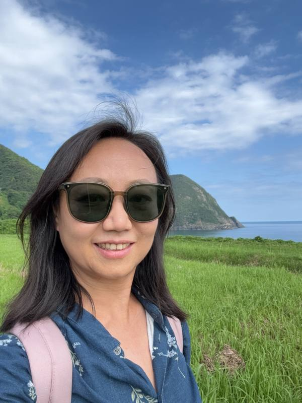

在地嚮導帶您品鑑京都韻味
深耕日本深度遊十餘年，專注於帶您發現旅行攻略中讀不到的「真實京都」
"我們度過了一個寧靜美好的下午，騎行穿過京都最平靜優美的角落——運河小徑、神社庭院，甚至在河邊戲水。別猶豫，趕緊預約吧。"
"騎行拜訪了十座不同的神社，Yuami 展現出令人印象深刻的專業知識。比起普通徒步團，這趟體驗多了一層維度，強烈推薦！"
"我們看到了遠離遊客區的寺院與神社，學到了沒有專業講解就無法理解的知識，簡直太棒了！"
"這是我們在日本最難忘的一個早晨！便當早餐也非常美味。"
"Yuami 的行程安排得非常好——她把神道文化講解得如此透徹，讓我們那一天也感覺成為了其中一部分。非常感謝！"

「在旅遊業深耕十年後，我漸漸明白：京都最美的部分從不在地圖上——它藏在清晨寺院的靜謐裡，藏在旅遊巴士到不了的小巷深處。
2025 年，我創立了月阿彌（Yuami），希望把旅行中的「人情味」找回來。作為你的在地嚮導，我的目標很簡單：用十年經驗積累的用心與專業，與你分享這座城市的故事、禪意與真實脈動。
我不只是帶你看京都，更想幫你活進京都裡。」